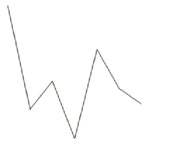

To build a chart, you need 3 objects : a Chart, a Plot and a Serie. Chart2D is the base class for a chart. It acts as a “container” in which Plots can be drawn. A plot is defined by its type (how are the data represented ?) and has series. A Serie is an object representing data to be plotted.
First, we have to create a chart. A chart must have a defined size, otherwise it will not be able to be rendered.
Then, we must define a plot to be drawn on the chart:
The plot type is defined in this constructor.
The possible values are contained in the Plot, Plot2D, BarPlot and PiePlot classes.
We will explain this later in the Plot types section.
Now that we have a plot defined in the chart, we have to feed it with some data.
The Serie object acts as a container for data.
The Serie class has a constructor defined like this :
We build a new Serie object and add it to the chart.
Then, we can add the chart to the page :
Please note that attaching the chart to the page automatically calls the refreshChart method. You always can refresh the chart by calling
This complete code will output the following chart :

This chart is not very expressive … We will see how to customize its appearance, add axes, legend, effects …